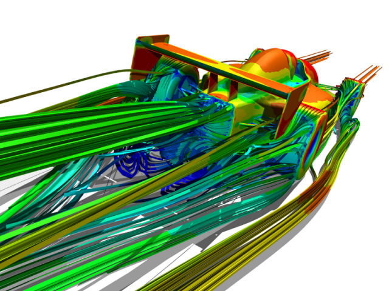

Caedium RANS Flow
Caedium RANS Flow simulates realistic (viscous) gas (e.g., air) and liquid (e.g., water) flow with heat transfer using state-of-the-art Computational Fluid Dynamics (CFD) software.
Try our Caedium Professional add-on for a complete CFD software system that includes this add-on and others - for details check out our Caedium Product Comparison chart.
Caedium RANS Flow makes it easy to simulate complex fluid flow around and through your design with Caedium's easy-to-use visualization tools that provide insights into the physical effects of the fluid on your design and vice versa. Improve your simulation turnaround time with unlimited parallel computations at no extra cost.
Caedium RANS Flow uses a custom version of OpenFOAM® that is capable of simulating complex fluid flow and heat transfer over and through virtually any configuration whether it be the external flow over an aircraft, car, yacht, or a submersible, or the internal flow through a computer case, mining drill, pipe, or duct.
External CFD Simulation
You can determine the performance of your design by using Caedium's 3D visualization and reporting tools for quantities such as velocity, pressure, forces (e.g., lift and drag) and moments.
Caedium RANS Flow is more generally applicable than our Caedium Panel Flow add-on, but it does require a volume mesh and therefore potentially longer simulation run times.
Check out Caedium RANS Flow examples and tutorials.
 Internal CFD Simulation
Internal CFD Simulation
Caedium RANS Flow, which also includes Caedium Transient, is a fully integrated add-on for Caedium - our unified simulation environment.
Features
- Create meshes or grids on the true geometry with:
- Hexahedra volume cells and quadrilateral surface cells
- Tetrahedra volume cells and triangular surface cells
- Polyhedra volume cells and polygonal surface cells
- Geometry-based sizing functions
- Simulate:
- Complex viscous separations and vortices with state-of-the-art Reynolds-Averaged Navier-Stokes (RANS) CFD for external or internal fluid flow
- Laminar or turbulent flow with a large selection of turbulence models, including:
- Spalart-Allmaras
- Standard k-epsilon
- Realizable k-epsilon
- k-omega SST
- Steady or unsteady flows with real-time playback using our Transient Archive Technology
- Wide-range of flow regimes:
- Incompressible subsonic (Mach < 0.3)
- Compressible subsonic (0.3 < Mach < 0.7)
- Transonic (0.7 < Mach < 1.0)
- Heat transfer:
- Forced and natural convection to track temperature profiles
- Radiation to determine heat flux
- Conjugate Heat Transfer (CHT) for combined heat transfer through coupled fluid and solid regions
- Multi-phase (multiphase) with Volume Of Fluid (VOF) for free surface flows, e.g., water and air around a ship's hull
- Rotating machinery using Moving Reference Frames (MRF), e.g., mixing tanks
- Porous media, e.g., flow through filters
- Passive species (scalar) transport, e.g., pollutant dispersal
- Speedup simulations using parallel (MPI) solvers on a multi-core computer
- Speedup results extraction on a multi-core computer using parallel threads (OpenMP) and provide interactive 3D visualization while the simulation is running
- Steer the simulation using pause to allow property changes and then resume
- Import volume meshes from third party applications with a large selection of formats, including:
- OpenFOAM (.ofm + case directories)
- FLUENT (.msh, .cas)
- CFX (.geo)
- PROSTAR (.vrt)
- Export volume meshes and results to third party applications in the following formats:
- OpenFOAM (.ofm + case directories)
- FLUENT (.msh + .dat)
- EnSight (.case)
- Fieldview (.uns)
- Tecplot 360 (.plt)
Not Supported
- Multi-species or chemical reactions
- Deforming or moving mesh
- Phase changes due to cavitation or boiling or condensing
- Dispersed multiphase
More
Looking for more Caedium capabilities? Then consider our Professional add-on.
OpenFOAM is a registered trademark of OpenCFD and is unaffiliated with Symscape.